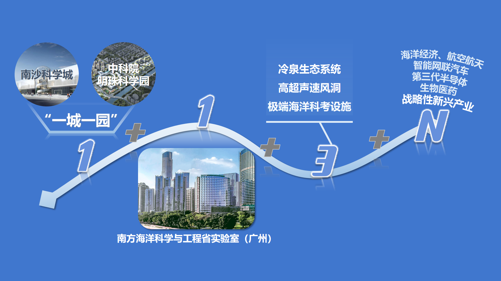

改革开放四十年，风云际会间，有这样一些城市，他们肩负着改革创新的特殊使命，承担着辐射周边，区域振兴的重要职责，他们之中有领跑上海国际化大都市创新建设的先驱，有西部第一横跨两江的产业先锋，有协同港澳共谋发展的珠江明珠，还有天府宝地公园遍地的绿色新城……他们布局在祖国的大江南北，发挥着本区域不可或缺的关键作用，但他们都有一个相同的名字——国家级新区。
定义：国家级新区，是由国务院批准设立，承担国家重大发展和改革开放战略任务的综合功能区
截止2022年8月，全国共设立19个国家级新区，其中8个在东部，2个在中部，6个在西部，3个在东北。国家级新区的行政级别通常为正厅级，部分为副省级。
因有国务院批复体现国家级战略和新区发展需要，所在省按要求须下放部分省级管理权限，其实质均拥有副省级管理自主权，而与新区所处区域行政级别无关。如南沙新区，国家定位立足广州、打造粤港澳全面合作示范区，既不可脱离广州，又因港澳社会制度不同，甚至需要省级以上的权力来管理和协调，所以南沙新区是获得由国家发改委牵头的国家级新区。
19个国家新区中，南沙新区位于珠江之滨，与港澳隔海相望。
2022年，香港回归祖国25周年，澳门回归23周年，也是南沙新区正式获批的第十年。回归后的香港、澳门特别行政区与广东共同发展形成互利共赢局面。保持港澳长期繁荣稳定，推动粤港澳的全面合作，已成为我国长期治国理政的重要发展战略。
南沙，这座位于珠江畔的名不见经传的小城，在十年间一步步走向了粤港澳合作、大湾区发展的中心舞台，发挥着连接港澳，面向世界的枢纽性作用，成为粤港澳大湾区不可或缺的一部分。
理由一：湾区中心
南沙区在广州最南端，距离市中心城区将近60km，在改革开放前就是一个小渔村，同时因为临海属于边防地区，进出都需要层层手印的边防通行证。改革开放后随着经济发展和基础建设的推进，南沙区内交通网络才逐渐完善，90年代落成的洛溪大桥、沙湾大桥、番中公路形成珠三角最发达地区的公路干线，以及沟通东西两岸的虎门汽车渡轮也在南沙经停，南沙逐渐成为区域交通枢纽，连接珠江两岸。
从广州市的地区规划来看，南沙的地理位置不占优，即使在逐渐成为地区交通枢纽后，距离城区距离太远的劣势不能根除，广州市政府也提出要发展南沙，依托南沙港对标东京湾，但实际上南沙的发展始终受制。
将地图的比例尺缩小，将整个珠三角城市群囊括其中，会发现南沙北邻广州番禺区，西南两面接壤中山市，东面与东莞隔伶仃洋和狮子洋相望，距离广州中心城区、深圳和珠海都只有50-60公里，距香港38海里，距澳门41海里。南沙的地理位置从广州最南端的行政区一跃成为了珠三角城市群的几何中心，得天独厚的地理优势意味着南沙可以承担起区域枢纽的位置，发挥出更大的作用。
理由二：优良水港
南沙是珠三角中心，陆上交通的交汇点。但陆上交通网络还不能全面说明南沙作为交通枢纽的作用。除此之外，南沙还是珠江口水路运输与陆路运输的交接点。
据了解，深圳、珠海各港，由于处在珠江口外，受风浪影响较大，根据有关统计，它们每年可作业的时间要比南沙少40天左右。
上世纪初，广州港腹地内的经济发展迅速。广州港的货物吞吐量基本一直保持持续增长的势头，彼时广州的黄埔港服务于珠三角，已呈饱和的状态，港急需扩大港口通过能力，尤其是需要扩大专业化深水码头的规模以及改善出海航道的水深条件。
南沙三面环海，海岸线长255公里，其中有位于珠江出海口虎门水道西侧、水深9-15米的天然水岸线约7公里，其泥沙回游量不大，建深水泊位条件良好，是珠江三角洲天然的深水良港。在南沙港以前，广州港已有的成规模港区全部集中在珠江东岸，对于广州城市空间战略，1乃至整个珠江三角洲西部的支持不够，南沙港区位于珠江西岸，其建设和发展可以优化广州港空间布局，更好地支持地区经济的发展。
1注释：2000年6月至9月，广州开国内大城市之先河，出台了中国大城市中第一个战略规划——《广州城市建设总体战略概念规划纲要》，并提出了一个日后被广为传播的战略规划：南拓北抑（后觉得不好听改为了北优），东进西联。
南沙港口的开辟，还可以可舒缓香港港口运输的紧张状况，另一方面，亦可以充分利用香港这个世界三大良港之一完善的货运服务设施与管理。
理由三：时代在召唤——粤港澳合作与大湾区建设
粤港澳合作是长期来粤港经济合作以及珠三角经济一体化等的延续和发展。
“粤港澳合作”在2009年全国“两会”首次写入了政府工作报告，国务院批准的《珠江三角洲地区改革发展规划纲要》首次提出将南沙、前海和橫琴列为粤港澳重点合作区域，要规划建设广州南沙新区，作为加强粤港澳合作的重要载体。2011年年初，国家“十二五”规划纲要把南沙新区开发提升到“深化粤港澳合作，建设中华民族共同家园”的新高度，明确提出“打造服务内地、连接港澳的商业服务中心、科技创新中心和教育培训基地，建设临港产业配套服务合作区”。
中共中央政治局委员、广东省委书记汪洋提出了“以南沙新区开发为突破口，打造一个新广州”的战略构想，并在2011年10月省委省政府南沙新区开发建设现场会上要求要努力把南沙新区打造成珠三角乃至全国最具国际竞争力的区域。
广州市乃广东省都将南沙新区开发建设作为广州市的“一号工程”，以“科学开发，从容建设”为理念，推动南沙新区开发建设。
2019年2月18日，中共中央、国务院印发《粤港澳大湾区发展规划纲要》，按照规划纲要，粤港澳大湾区不仅要建成充满活力的世界级城市群、国际科技创新中心、 “一带一路”建设的重要支撑、内地与港澳深度合作示范区，还要打造成宜居宜业宜游的优质生活圈，成为高质量发展的典范。
粤港澳大湾区发展规划纲要》明确提出，共建粤港澳合作发展平台，加快推进 深圳前海、广州南沙、珠海横琴 等重大平台开发建设，充分发挥其在进一步深化改革、扩大开放、促进合作中的试验示范作用，拓展港澳发展空间，推动公共服务合作共享，引领带动粤港澳全面合作。其中珠海横琴和深圳前海依托地理位置，分别侧重粤澳合作和粤港合作，南沙新区地处珠三角核心区，定位于粤港澳三地合作示范区。
南沙本身地理位置优越地处珠三角几何中心，与珠三角大部分城市联通，同时与港澳隔海相望，又拥有优良水港适宜发展航运贸易，结合粤港澳大湾区建设的经济发展导向，再加上不断叠加的政策利好——国家级新区、自贸区、高新技术开发区等发展新区设置，南沙迎接历史机遇，扎实迈步创造了“南沙速度”。
2022年2月21日，广州南沙粤港澳全面合作示范区建设成效新闻发布会举行。粤港澳大湾区建设以来，南沙立足粤港澳全面合作示范区定位，坚决扛起建设粤港澳合作重大平台的历史责任，不断深化与港澳及周边地区合作。发布会一方面回顾并展示了南沙新区的经济社会建设成就。
发布会在着重强调了南沙开展港澳合作的阶段性成果，包括基础设施“硬联通”、规则机制“软联通”、科技人才“智联通”、产业协同“链联通”和交往交融“心联通”。
一、基础设施“硬联通”——半小时经济圈
南沙立足地理位置优势，深化交通枢纽优势，着力构建“半小时交通圈”，加快建设服务大湾区区域交通中心。大湾区建设以来，南沙加快推进一批轨道交通、高快速路、航运物流项目。
南沙大桥连通珠江东西岸，珠江两岸连接继续加强；广深港高铁落地通行，南沙前往香港九龙仅需35分钟；海陆联运“最后一公里”打通，南沙港铁路建成通车；广州18号线（首通段）、4号线全线建设通车，连接南沙区中心与广州市主城区，其中广州18号线最高时速达180km/h，大大缩短了城区通勤时间，加强区域联系，助力一体化发展。18号线南延段还将连通中山、东莞甚至深圳，巩固了南沙作为“轨道上的大湾区”核心位置的地位。
目前，南沙与湾区内周边地区间交通体系不断完善，往来更加便捷，“半小时交通圈”呼之欲出。
二、规则机制“软联通”——畅通要素跨境流动
规则衔接是大湾区建设的重点和难点，始终涉及到两岸三地，两种制度，三种货币，各种要素流通需要突破的规则限制重重。
大湾区建设以来，南沙着力提升与港澳规则机制“软联通”水平，创设新型合作机制，规则衔接取得突破，制度创新取得新成果，信用建设成效明显，不断化“制度之异”为“制度之利”。2021年，粤港合作咨询委员会在南沙成立，聘任16名香港委员和10名内地委员，为粤港深度合作搭建桥梁、建言献策，目前已有18家香港工商界专业机构成为咨委会服务中心会员，率先在内地形成香港工商协会集聚效应。南沙15家银行机构获得大湾区“跨境理财通”试点资格，“南向通”“北向通”产品已超1700种。
三、科技人才“智联通”——引才澳港，打造科教高地
2021年2月，广东省推进粤港澳大湾区建设领导小组《广州南沙新区创建国际化人才特区实施方案》，全国首个国际化人才特区落地南沙。南沙正形成以南沙科学城、明珠科学园为主阵地，以南方海洋科学与工程省实验室（广州）为原始创新主力军，以冷泉生态系统、高超声速风洞、极端海洋科考设施等3个重大科技基础设施为前沿研究战略支撑，以多个高水平研究院为技术供给主平台的“1+1+3+N”科技创新平台体系。
高等教育方面，香港科技大学（广州）入驻南沙，这是南沙区内的第一所高校，由香港科技大学和广州大学合办，是《广州南沙深化面向世界的粤港澳全面合作总体方案》出台后落成的首个重大项目，于2022年9月1日正式投入教学使用。
大湾区建设以来，南沙全面落实《规划纲要》关于推进广深港澳科技创新走廊建设、创建国际化人才特区的要求，着力构建“1+1+3+N”科创平台体系，加快建设香港科技大学（广州），不断深化粤港澳科技创新合作，推进建设融通港澳、接轨国际的人才发展环境。南沙作为广深港澳科技创新走廊枢纽节点、大湾区国际科技创新中心重要承载区、全国首个国际化人才特区的影响日益凸显。
四、产业协同“链联通”——粤港澳产业协同发展
南沙持续加强与港澳的产业优势互补，打造以战略性新兴产业和未来产业为引领，先进制造业和现代服务业“双轮驱动”的大湾区现代产业新高地。目前，已落户港澳企业近3000家，涵盖金融业、租赁和商务服务业、科学研究和技术服务业等行业；累计培育上市公司11家；拥有国家级专精特新“小巨人”企业3家，省级专精特新中小企业24家，市级“两高四新”企业112家。
五、交往交融“心联通”——聚焦民生，安居乐业
大湾区建设以来，南沙不断完善便利港澳居民工作生活政策措施体系，着力提供与港澳相衔接的公共服务和社会管理环境，构筑港澳青年创新创业乐土。
南沙高标准建设了10个港澳青年创新创业基地，目前已经入驻港澳青创团队270多个；常态化开展“百企千人”实习计划，吸引了近2000名港澳青年学生在南沙完成实习，近七成港澳青年学生将继续参与或推荐身边的朋友参与来年的实习，并且表达出参与南沙开发建设的强烈意愿；同时创办港式国际化社区和港人子弟学校，南沙惠港惠澳政策一站式服务平台，集中发布港澳人士可享受的优惠政策40余项目前，港澳青年来南沙创业就业更加便捷，港式国际化社区和港人子弟学校加快建设，教育医疗等公共服务水平日益完善提升。
加快广州南沙粤港澳重大合作平台建设，是贯彻落实《粤港澳大湾区发展规划纲要》的战略部署，是建设高水平对外开放门户、推动创新发展、打造优质生活圈的重要举措。为加快推动广州南沙深化粤港澳全面合作，打造成为 立足湾区、协同港澳、面向世界 的重大战略性平台，在粤港澳大湾区建设中更好发挥引领带动作用，2022年6月6日，国务院印发《广州南沙深化面向世界的粤港澳全面合作总体方案》，作为推进南沙建设的基础性文件。
一个战略定位、两阶段目标、三个先行启动区、四方面保障、五大建设任务……南沙即将迎来迎来新一轮的重大历史机遇。
往后的南沙不仅仅是广州的南沙，还是湾区的南沙、国家的南沙、世界的南沙。